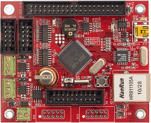

TE-STM32F107 - встраиваемый модуль производства компании Терраэлектроника на основе 32-разрядного микроконтроллера STM32F107 компании STMicroelectronics. Примененный микроконтроллер имеет ядро Cortex-M3, порт Ethernet и два порта CAN. Проверенная схемотехника наиболее сложной части встраиваемой системы, оптимизированная топология платы, наличие функций отладки позволяют использовать модуль TE-STM32F107 как на этапе разработки, так и в составе серийной системы управления.
Отличительные особенности
- микроконтроллер STM32F107VCT6:
- 72 МГц ARM Cortex-M3,
- 256 Кбайт Flash-памяти программ и 64 Кбайта ОЗУ,
- два 12-разрядных АЦП (16 внешних каналов),
- два 12-разрядных ЦАП,
- Ethernet MAC 10/100, USB OTG,
- 2x CAN, 5х USART, 3х SPI, I2C, SDIO,
- корпус LQFP-100;
- SPI Flash-память AT45DB161D (16 Мбит);
- разъем и драйвер порта Ethernet;
- разъем порта USB OTG;
- 2 разъема и драйверы портов CAN;
- 2 разъема порта UART;
- разъем JTAG;
- аудио-усилитель и динамик;
- 31 линия портов микроконтроллера выведена на разъем;
- разъем питания: 7,5...9,0 В;
- размеры платы модуля: 85х70 мм.
Комплектация
- плата TE-STM32F107;
- CD с документацией и программным обеспечением;
- «Руководство пользователя» в печатном виде.
На CD записаны установочные файлы системы Eclipse/GCC, руководство по ее конфигурации, проект программы тестирования модуля и руководство по использованию этой программы.
Рекомендации